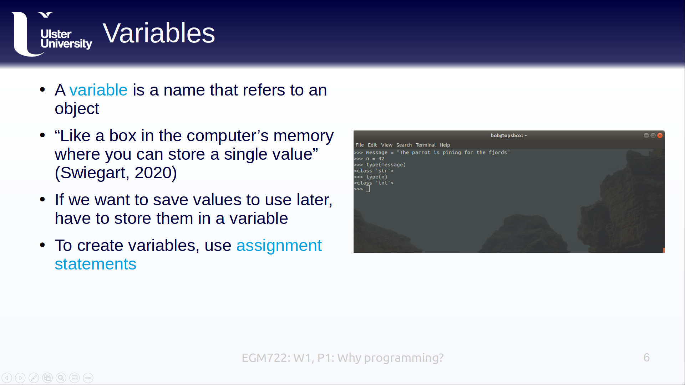
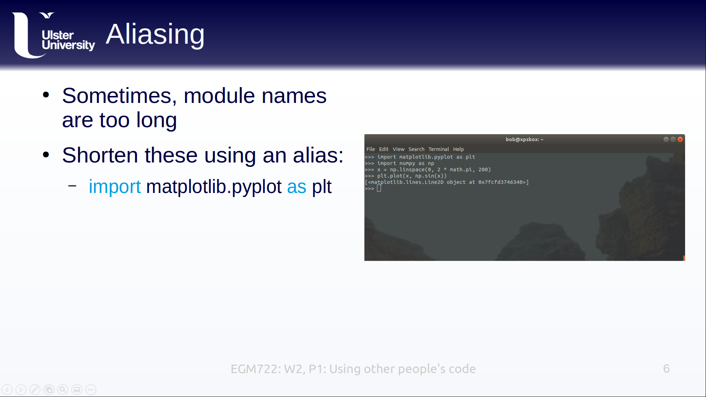

lectures
Here, you will find links to YouTube playlists of the lectures for each week, as well as transcripts and the slides in pdf format.
week 1 - introduction to git and programming
week 1 video playlist

week 2 - additional python concepts
week 2 video playlist
